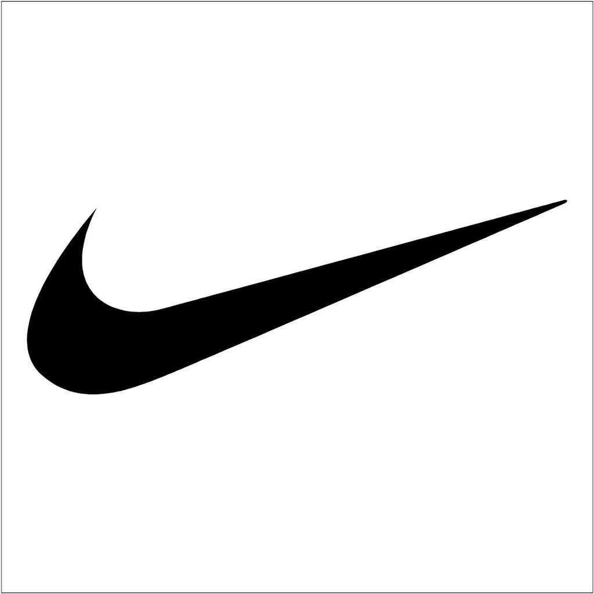

Martin Pecot
Bienvenue sur mon profil en ligne, apprenez en plus sur moi.
Cette page a été codée grâce aux cours de Le Wagon.
Découvrez Le WagonÉtudes
J'étudie actuellement à l'ESSEC Business School les matières du commerce international. Il s'agit d'une première étape dans mon projet professionnel. J'ai pour ambition de pouvoir travailler plus tard dans l'industrie du sport. N'hésitez pas à consulter mon profil LinkedIn disponible en bas de page.

Sport
Je suis un athlète passionné par le sport et notamment par la course à pied. J'ai notamment participé aux championnats de France de 10km. J'ai également étudié la course à pied d'un point de vue scientifique et je vous invite à découvrir mon site web sur le marathon. N'hésitez pas à consulter mon profil Strava disponible en bas de page.
Ma source d'inspiration
Phil Knight, le fondateur de Nike est ma source d'inspiration. Cet entrepreneur est à l'origine de l'une des plus grandes marque de sport, qui révolutionne depuis toujours le secteur du running, en passant de la création de la Nike Cortez jusqu'à celle de la Nike Zoom Alphafly Next %.
